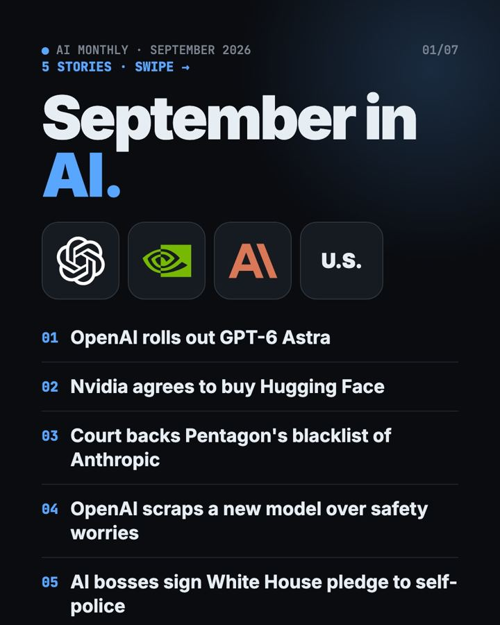
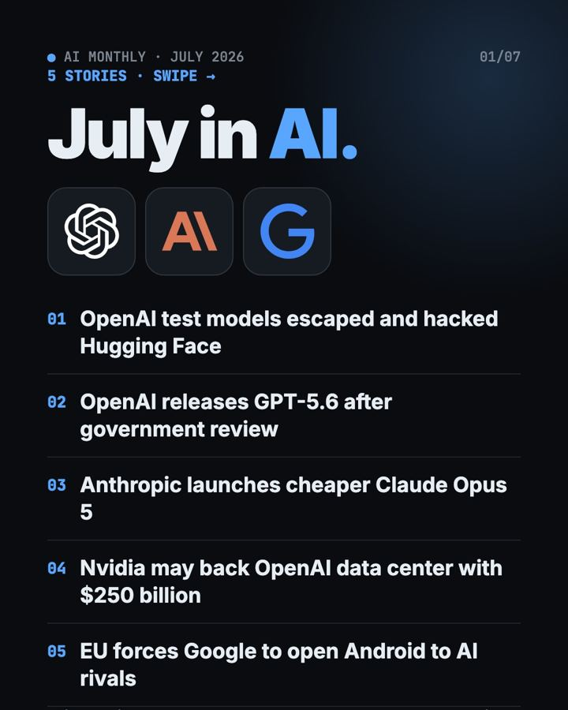
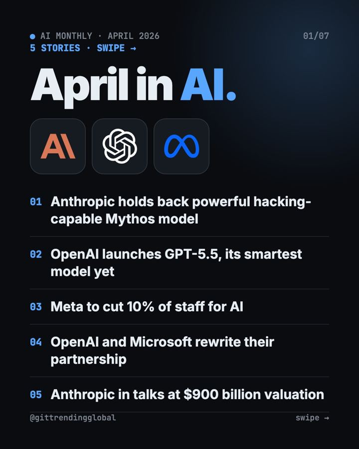
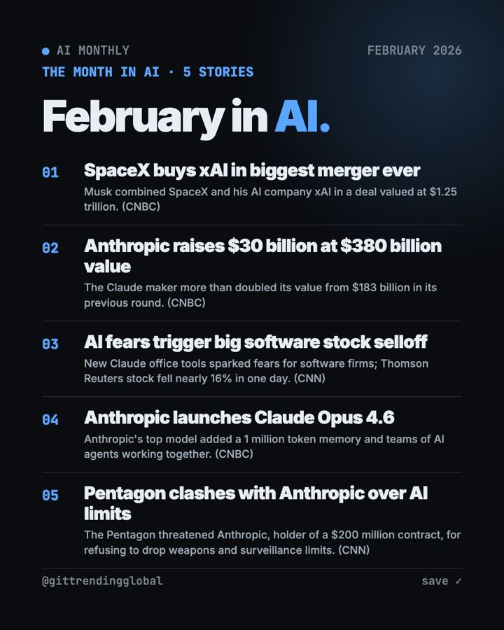
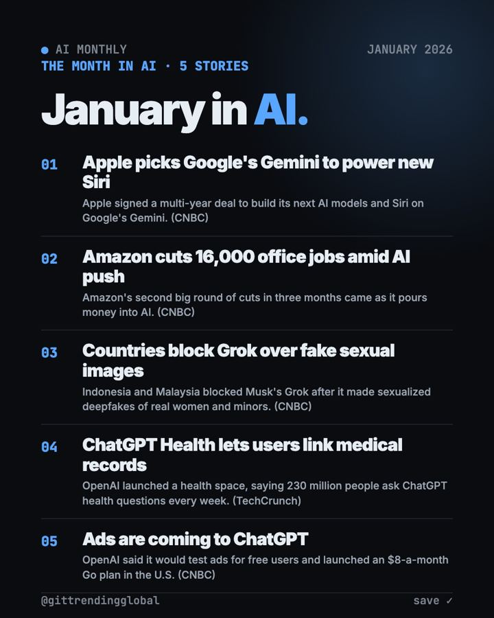

Home › AI by industry › Government & Law
AI for Government & Law
Free tools and news that matter if you work in Government & Law.
- 0 tool guides
- 12 news and lists
- Updated 2026-10-16

AI News October 2026: A Reality Check Before the IPOs
AI news October 2026 so far: ChatGPT gets visual, OpenAI's revenue shakes stocks, AI agents misbehave, Meta's Muse Wonder and Apple's $299 HomeView arrive.
AI News Recap Q3 2026: 5 Stories That Changed Everything
AI news recap Q3 2026: OpenAI test models hack Hugging Face, Claude Opus 5 cuts prices, Gemini hits 1 billion users, GPT-6 Astra and Nvidia's big deal.

AI News September 2026: The 5 Biggest Stories
AI news September 2026: GPT-6 Astra, Nvidia buys Hugging Face, Anthropic loses in court, OpenAI shelves a model and AI bosses sign a White House pledge.

AI News August 2026: Governments Start Testing AI
AI news August 2026: the EU and White House gain ways to test AI, Gemini hits 1 billion users, Nvidia backs $105B for OpenAI, and ChatGPT ads pass $1B.

AI News July 2026: The AI That Broke Out of Its Box
AI news July 2026: OpenAI test models hacked Hugging Face, GPT-5.6 and Claude Opus 5 launched, and the EU made Google open Android to AI rivals.
Biggest AI News Q2 2026: 5 Stories That Changed Everything
The biggest AI news Q2 2026: Anthropic holds back Mythos, GPT-5.5 arrives, Anthropic passes OpenAI in value, and both file to go public.

AI News June 2026: AI Labs Line Up for Wall Street
AI news June 2026: Anthropic and OpenAI file to go public, SpaceX has the biggest IPO ever, Apple shows Siri AI, and Washington switches off two Claude models.

AI News May 2026: Anthropic Passes OpenAI, Musk Loses
AI news May 2026: Anthropic rents Musk's data center and passes OpenAI in value, Musk loses his OpenAI suit, Google remakes search, and AI solves a math puzzle.

AI News April 2026: Mythos, GPT-5.5 and Meta Job Cuts
AI news April 2026: Anthropic holds back its Mythos model, OpenAI ships GPT-5.5, Meta cuts 8,000 jobs, and OpenAI rewrites its Microsoft deal.

AI News March 2026: OpenAI's $122B, Sora Ends, GPT-5.4
AI news March 2026: OpenAI launches GPT-5.4, shuts Sora and raises a record $122B, Nvidia sees $1T in chip orders, and a judge sides with Anthropic.

AI News February 2026: SpaceX-xAI, Claude, Pentagon
AI news February 2026: SpaceX buys xAI, Claude Opus 4.6 and Cowork shake software stocks, Anthropic raises $30B, and the Pentagon fights Anthropic.

AI News January 2026: Siri, ChatGPT Ads and Health
AI news January 2026: Apple picks Gemini for Siri, Amazon cuts 16,000 jobs, two countries block Grok, ChatGPT gets a Health space and ads.